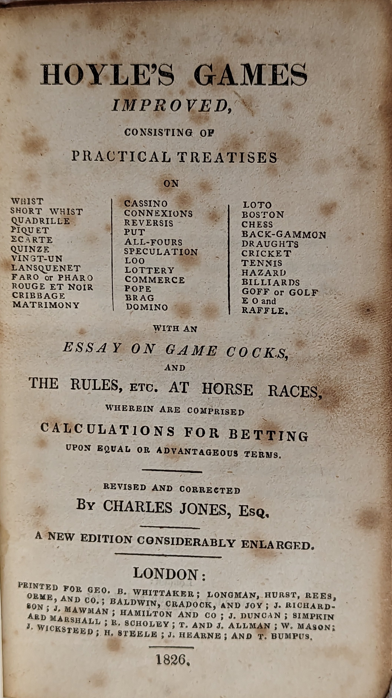

A Descriptive Bibliography of Edmond Hoyle
Copyright © 2014-26 by David Levy
(page updated 2025-04-29)User Guide
Jones.11
Hoyle's Games Improved, printed for Geo. B. Whittaker et al, eleventh London edition, 1826.
 |
Title: | HOYLE'S GAMES | IMPROVED, | CONSISTING OF | PRACTICAL TREATISES | ON | [12 lines to left of rule] WHIST | SHORT WHIST | QUADRILLE | PIQUET | ECARTE | QUINZE | VINGT-UN | LANSQUENET | FARO or PHARO | ROUGE ET NOIR | CRIBBAGE | MATRIMONY | [12 lines between two rules] CASSINO | CONNEXIONS | REVERSIS | PUT | ALL-FOURS | SPECULATION | LOO | LOTTERY | COMMERCE | POPE | BRAG | DOMINO | [12 lines to right of rule] LOTO | BOSTON | CHESS | BACK-GAMMON | DRAUGHTS | CRICKET | TENNIS | HAZARD | BILLIARDS | GOFF or GOLF | E O and | RAFFLE. | WITH AN | ESSAY ON GAME COCKS, | AND | THE RULES, ETC. AT HORSE RACES, | WHEREIN ARE COMPRISED | CALCULATIONS FOR BETTING | UPON EQUAL OR ADVANTAGEOUS TERMS. | [short rule] | REVISED AND CORRECTED | By CHARLES JONES, Esq. | [short rule] | A NEW EDITION CONSIDERABLY ENLARGED. | [short rule] | LONDON: | PRINTED FOR GEO. B. WHITTAKER: LONGMAN, HURST, REES, | ORME, AND CO.; BALDWIN, CRADOCK, AND JOY; J. RICHARD-|SON; J. MAWMAN; HAMILTON AND CO; J. DUNCAN; SIMPKIN | AND MARSHALL; R. SCHOLEY; T. AND J. ALLMAN; W MASON; | J. WICKSTEED; H. STEELE; J. HEARNE; AND T. BUMPUS. | [short rule] | 1826. |
| Collation: | 18o: [A]4(A2+1) B–2U6 2X4 [$½ (−2R2,3) signed]; 261 leaves, pp. [i–v] vi–x, [1] 2–84 [85] 86–413 [414–415] 416–465 [466–467] 468–491 [492–493] 494–496 [497] 498–512 [misprinting 346 as 446, 501 as 511] |
| Contents: | Signature (Page) Reference | Contents | Signature (Page) Reference | Running Titles |
| A1r (i) | title | |||
| A1v (ii) | ‘London: | Shackell, Arrowsmith, and Hodges.’ | |||
| A2r–A2v (iii–iv) | "ADVERTISEMENT. This edition of Hoyle's Games Improved will be found to differ in many respects from the preceding editions, and, it is presumed, for the better. The style, which was often obscure, obsolete, and ungrammatical, has undergone a general revision; several of the articles have been considerably enlarged; and two new games, greatly in vogue, namely, Ecarté and Short Whist, have been added. Meanwhile nothing has been taken away, except the games of Skittles and Dutch Pins, which were deemed too low in their nature to find a place among gentlemanly amusements." | |||
| A2v (iv) | blank | |||
| A2+1r–A2+1v (v–vi) | ‘CONTENTS. | [...]’ | A2+1v (vi) | ‘CONTENTS.’ | |
| A3r–A3v (vii–viii) | ‘RAFFLE. | [...]’ | A3v (viii) | ‘RAFFLE.’ | |
| A4r–A4v (ix–x) | ‘WHIST. | [short rule] | ODDS against and for the dealer's Hand of | trumps. | [...]’ | A4v (x) | ‘WHIST.’ | |
| B1r–B1v (1–2) | ‘THE | GAME OF WHIST. | [...]’ | B1v–H6v (2–84) | ‘WHIST.’ | |
| B1v–B2r (2–3) | ‘[...] | TWENTY-FOUR SHORT RULES FOR LEARNERS. | [...]’ | |||
| B2v (4) | ‘METHODS OF SCORING AT WHIST. | [...]’ | |||
| B2v–F5r (4–57) | ‘[...] | MR. HOYLE'S GAME AT WHIST. | [...]’ | |||
| F5r–G5v (57–70) | ‘[...] | MR. PAYNE'S MAXIMS FOR WHIST. | [...]’ | |||
| G6r–H6r (71–83) | ‘[short rule] | ADDITIONS. | [...]’ | |||
| H6r–H6v (83–84) | ‘[...] | SHORT WHIST. | [...]’ | |||
| I1r–K4r (85–103) | ‘[...] | MR. HOYLE'S | GAME OF QUADRILLE. | [...]’ | I1v–L2v (86–112) | ‘QUADRILLE.’ | |
| K4r–K5v (103–106) | ‘[...] | VARIATIONS OF THE GAME AT QUADRILLE. | [...]’ | |||
| K5v–L2v (106–112) | ‘[...] | Additions to the Game of Quadrille, consisting | of rules in verse for short memories, with in-|structive notes; and two curioius games. | [...]’ | |||
| L3r–L6r (113–119) | ‘THE | GAME OF PIQUET. | [...]’ | L3v–N2v (114–136) | ‘PIQUET.’ | |
| L6r–N1v (119–134) | ‘[...] | MR. HOYLE'S GAME OF PIQUET. | [...]’ | |||
| N1v–N3r (134–137) | ‘[...] | LAWS OF THE GAME OF PIQUET. | [...]’ | |||
| N3r–O1r (137–145) | ‘[...] | THE GAME OF ECARTE. | [...]’ | N3r–N6v (137–144) | ‘ECARTE.’ | |
| O1r–O1v (145–146) | ‘[...] | THE GAME OF QUINZE. | [...]’ | O1r (145) | ‘QUINZE.’ | |
| O1v–O2v (146–148) | ‘[...] | THE GAME OF VINGT-UN. | [...]’ | O1v–O2r (146–147) | ‘VINGT-UN.’ | |
| O2v–O3r (148–149) | ‘[...] | THE GAME OF LANSQUENET. | [...]’ | O2v–N2r (148–135) | ‘LANSQUENET.’ | |
| O3r–P1v (149–158) | ‘[...] | THE GAME OF FARO. | [...]’ | O3r–P1r (149–157) | ‘FARO.’ | |
| P1v–P3r (158–161) | ‘[...] | THE GAME OF ROUGE ET NOIR. | [...]’ | P1v–P2v (158–160) | ‘ROUGE ET NOIR.’ | |
| P3r–Q2r (161–171) | ‘[...] | THE GAME OF CRIBBAGE. | [...]’ | P3r–Q2r (161–171) | ‘CRIBBAGE.’ | |
| Q2v–Q3r (172–173) | ‘THE GAME OF MATRIMONY. | [...]’ | Q2v (172) | ‘MATRIMONY.’ | |
| Q3r–Q4v (173–176) | ‘[...] | THE GAME OF CASSINO. | [...]’ | Q3r–Q4r (173–175) | ‘CASSINO.’ | |
| Q4v–Q5r (176–177) | ‘[...] | THE GAME OF CONNEXIONS. | [...]’ | Q4v (176) | ‘CONNEXIONS.’ | |
| Q5r–R1v (177–182) | ‘[...] | THE GAME OF REVERSIS. | [...]’ | Q5r–R1r (177–181) | ‘REVERSIS.’ | |
| R1v–R2r (182–183) | ‘[...] | THE GAME OF PUT. | [...]’ | R1v (182) | ‘PUT.’ | |
| R2r–R3r (183–185) | ‘[...] | THE GAME OF ALL-FOURS. | [...]’ | R2r–R2v (183–184) | ‘ALL-FOURS.’ | |
| R3r–R3v (185–186) | ‘[...] | THE GAME OF SPECULATION. | [...]’ | R3r (185) | ‘SPECULATION.’ | |
| R3v–R4r (186–187) | ‘[...] | THE GAME OF LOO. | [...]’ | R3v (186) | ‘LOO.’ | |
| R4r–R4v (187–188) | ‘[...] | THE GAME OF LOTTERY. | [...]’ | R4r–R4v (187–188) | ‘LOTTERY.’ | |
| R5r–R6r (189–191) | ‘THE GAME OF COMMERCE. | [...]’ | R5r–R6r (189–191) | ‘COMMERCE.’ | |
| R6v–S1r (192–193) | ‘THE | GAME OF POPE OR POPE JOAN. | [...]’ | R6v–S1r (192–193) | ‘POPE OR POPE JOAN.’ | |
| S1v–S2v (194–196) | ‘THE GAME OF BRAG. | [...]’ | S1v–S2r (194–195) | ‘BRAG.’ | |
| S2v–S3r (196–197) | ‘[...] | THE GAME OF DOMINO. | [...]’ | S2v (196) | ‘DOMINO.’ | |
| S3r–S4v (197–200) | ‘[...] | THE GAME OF LOTO. | [...]’ | S3r–S4v (197–200) | ‘LOTO.’ | |
| S5r–T1v (201–206) | ‘THE GAME OF BOSTON. | [...]’ | S5r–T1v (201–206) | ‘BOSTON.’ | |
| T2r–T6v (207–216) | ‘THE GAME OF CHESS. | [...]’ | T2r–2D2v (207–304) | ‘CHESS.’ | |
| T6v–X1r (216–229) | ‘[...] | MR. HOYLE'S RULES FOR CHESS. | [...]’ | |||
| X1r–X2r (229–231) | ‘[...] | LAWS OF CHESS. | [...]’ | |||
| X2r–Y6v (231–252) | ‘[...] | MR. HOYLE'S CHESS LECTURES. | [...]’ | |||
| Y6v–2D2v (252–304) | ‘[...] | PHILIDOR'S | SELECT GAMES AT CHESS. | [...]’ | |||
| 2D3r–2D3v (305–306) | ‘THE GAME OF BACK-GAMMON. | [...]’ | 2D3r–2F2r (305–327) | ‘BACK-GAMMON.’ | |
| 2D3v–2F2v (306–328) | ‘[...] | MR. HOYLE'S | TREATISE OF BACK-GAMMON. | [...]’ | |||
| 2F2v–2I4v (328–368) | ‘[...] | Mr. PAYNE'S GAME OF DRAUGHTS. | [...]’ | 2F2v–2I4r (328–367) | ‘DRAUGHTS.’ | |
| on 2F6r–2H3v (335–354) | ‘DRAUGHTS—GAME I.’ through ‘DRAUGHTS—GAME XX.’ | |||
| 2I4v–2I6v (368–372) | ‘[...] | CRICKET. | [...]’ | 2I4v–2I6r (368–371) | ‘CRICKET.’ | |
| 2I6v–2K3r (372–377) | ‘[...] | TENNIS. | [...]’ | 2I6v–2K2v (372–376) | ‘TENNIS.’ | |
| 2K3r–2K6r (377–383) | ‘[...] | THE GAME OF HAZARD. | [...]’ | 2K3r–2K6r (377–383) | ‘HAZARD.’ | |
| 2K6v–2P1v (384–434) | ‘THE GAME OF BILLIARDS. | [...]’ | 2K6v–2P1v (384–434) | ‘BILLIARDS.’ | |
| on 2N3v–2N4r (414–415) | blank | |||
| 2P2r–2P2v (435–436) | ‘THE GAME OF GOFF OR GOLF. | [...]’ | 2P2r (435) | ‘GOFF.’ | |
| 2P2v–2P3r (436–437) | ‘[...] | THE GAME OF E O. | [...]’ | 2P2v (436) | ‘E O.’ | |
| 2P3r–2R6v (437–468) | ‘[...] | TREATISE | ON | GAME COCKS. | [...]’ | 2P3r–2R6v (437–468) | ‘GAME COCKS.’ | |
| on 2Q1r (445), 2Q5v–2Q6r (454–455), 2R5r (465) | ‘GAME-COCKS.’ | |||
| on 2R5v–2R6r (466–467) | blank | |||
| 2S1r–2X4v (469–512) | ‘HORSE-RACING. | [...] | [colophon]’ | 2S1v–2X4v (470–512) | ‘HORSE-RACING.’ | |
| on 2S6r (479), 2T5r (489) | ‘HORSE RACING.’ | |||
| on 2T6v–2U1r (492–493), 2U3r (497) | blank |
| Plates: | on P2r(159) woodblock: a tapis or cloth covering the Rouge et Noir table on T2v(208) woodblock: ‘CHESS MEN | [...] | THE CHESS BOARD. | [...]’ on 2D3r(305) woodblock: a backgammon board showing the starting position on 2F3v(330) woodblock: ‘[...] | DRAUGHT TABLE. | [...]’ on 2N3v(414) copperplate: ‘PLAN OF FORTICATION BILLIARDS.’ on 2N4r(415) copperplate: ‘PERSPECTIVE VIEW OF FORTICATION BILLIARDS.’ |
| Publisher: | George B. Whittaker, Longman, Hurst, Rees, Orme, and Brown, Baldwin, Cradock, and Joy, John Richardson, Joseph Mawman, Hamilton and Co., James Duncan, Simpkin and Marshall, Robert Scholey, Thomas and Joseph Allman, William Mason, John Wicksteed, H. Steele, John Hearne I, Thomas Bumpus, William Baynes, William Joy |
| Printer: | Shackell, Arrowsmith, and Hodges (colophon, Longman Archives) |
| Notices: | 1826-05 The Scots Magazine: "Hoyle's Games, Improved, Revised, and Corrected. By Charles Jones, Esq. A New Edition, considerably enlarged. 18mo. 6s." |
| Price: | 6s. (notice) |
| References: | Horr 744, Jessel 926, Rather 123 |
| Colophon: | ‘LONDON: | SHACKELL, ARROWSMITH, AND HODGES, JOHNSON'S-COURT.’ |
| Copies Seen: | BFl [I.795/HOYL (b1124828)]; E [C.Fras.380]; L [7915.de.80] (Google); L [C.46.b.33]; O [3843 f.20]; O [Jessel f.605]; Copisarow [3 copies]; OCl [789.87H I6J]; TNJ [GV1229.J7 1826]; Levy [1795] |
| Other Copies: | AWn [GV1201.H86]; NT [Lacock Abbey]; NT [Nostell Priory]; AMu [OTM: OK 06-1691]; HAG [KW 363 D 32] (Google); LT [Wb 787]; WA [I 288.880]; CtY-LW [63 826 H85]; DeU [GV1243.H85 1826]; LU [GV1243.H854 1826]; NjP [42845.479.17] (Google); NvLN [GV1241.H69 1826]; NvLN [GV1241.H69 1826 c.2]; AuNSL [T0082640]; AuVSL [793 H852HJ] |
| Notes: | The verses on Quadrille seem to come from the Ladies Magazine of August 1775. |